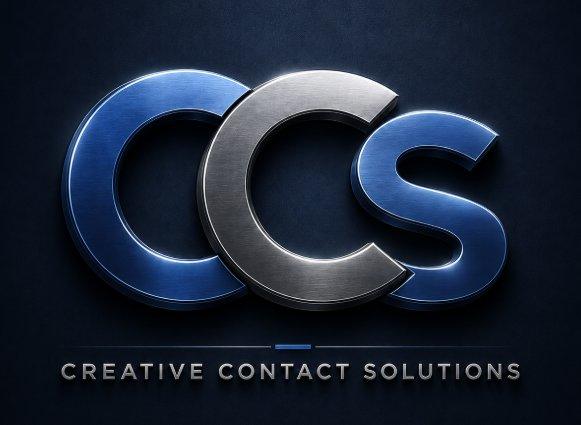

Know what AI will really do to your headcount before you sign.
AI vendors sell with their own ROI math. We add back the human work it leaves out: escalations, repeat calls, quality reviews and per-conversation fees. Then we tell you the exact resolution rate the AI must hit before you save a dollar.
Neutral by design: we don't sell AI and we take no vendor referral fees.
"AI resolves 40%, so you need 40% fewer agents." It doesn't work that way.
Simple vendor math skips five costs that every contact center leader has seen in real life. Put them back and a deal that looked like a headcount cut can lose money.
Harder escalations
When the AI hands off, the customer is frustrated and repeats themselves. Those calls take longer.
False resolutions
The AI marks it solved. The customer calls back, and a person handles it anyway.
Oversight
Someone has to review the AI's work for quality, compliance and audit.
Fees on every touch
Per-conversation pricing charges for the calls the AI fails, not just the ones it solves.
Queues don't shrink evenly
Smaller teams lose efficiency. 40% fewer calls never means 40% fewer agents.
The gap between the vendor's number and the real one
Staffing needed at each AI resolution rate, modeled with industry-standard Erlang C after escalations, repeat calls and reviews.
FTE needed by AI resolution rate
Illustrative example, not client data: 20,000 calls a month, 6-minute handle time, 80/30 service level, $45K loaded cost per FTE, $1 per AI conversation, $3K monthly platform fee, 20% extra time on escalations, 10% false resolutions, 5% of AI calls reviewed.
One line of business. One month of data. One clear answer.
No integrations, no software to install, and no customer personal data. Just the numbers you already report.
Share your numbers
Monthly volume by call type, talk, hold and after-call time (or chat handle time), hours, service level target, shrinkage and loaded cost. Add the AI vendor's quoted resolution rate and pricing.
We model every scenario
Erlang C staffing at every AI resolution rate from 0% to 100%, with escalation time, repeat calls, quality reviews and AI fees included.
You get the answer
A branded one-page report and a live readout with Mark: break-even rate, real FTE, cost, payback, and what to negotiate or pilot next.
The math is tested against published benchmarks and a year of real calls
Every model rests on its staffing engine, so we tested ours four ways before putting a client's name on a result.
Exact match
Reproduces the standard Call Centre Helper Erlang C worked example to the decimal.
11 of 11
Staffing matched a separately built engine in every scenario, from 3 agents to 200+.
361,417 calls
A full year of bank call center data. Actual service fell inside the model's predicted range, hour by hour.
No padding
The model leans toward slightly more staff, so the savings it shows are savings you can defend.
For the people who have to live with the AI decision
COOs and VPs of Operations
Decide whether to buy, and what results to hold the vendor to.
WFM leaders
Build the staffing plan for after go-live with numbers that hold up.
CFOs and procurement
Check the vendor's ROI case before the contract is signed, not after.
BPO executives
Show clients what work remains after AI and protect contracts and pricing at renewal.
CX consultants
Give clients a defensible, repeatable model instead of a one-off spreadsheet.
Transformation teams
Sequence pilots by the contact reasons where AI can actually pay back.
Priced by line of business. Fixed quote before any work starts.
We model the call types that make up 85% of a line of business's volume, for voice or chat. Every paid engagement starts with a written proposal and includes a mutual NDA, a branded report and a live readout.
AI Reality Check
- Short questionnaire before the call
- Your numbers entered live
- Break-even rate on the spot
- Written proposal and fixed quote after
AI Capacity Assessment
- Call types making up 85% of volume
- Staffing modeled on the whole queue
- Branded report and 60-minute readout
- Vendor quote reviewed
Program Assessment
- Everything in the Assessment
- Voice and chat side by side
- Ranking of where AI pays back first
- Pilot design and success measures
- Executive presentation and negotiation points
BPO & Enterprise
- Assessments across clients or sites
- Co-branded client reports
- Renewal and RFP support
- Priority access to the licensed tool
25% off your first assessment
For our first five clients, in exchange for an anonymized case study.
Pilot Validation, $750
After your AI pilot, we rerun the model with the measured results and compare them with the vendor's promise. Per line of business.
15% off for BPOs
BPOs get 15% off every engagement.
Prices in US dollars. Volume outside the modeled call types stays in the staffing model at today's handling. Added lines of business, channels or reruns are quoted before work begins. One discount per engagement; BPO pricing is set out in a written partner agreement. Travel, if requested, is billed at cost.
Contact Center Diagnostic: find what's really holding performance back
The CCS diagnostic method looks beneath the KPI: intake data, interviews at every level, a KPI and workflow review, and a ranked list of the seven issues that matter most. Choose how much of it you want CCS to run.
Guided Diagnostic Review
- CCS intake questionnaire and data request
- Review of your KPIs against benchmarks
- Gap analysis and Top 7 Issues
- Prioritized 90-day roadmap
- Two live strategy sessions
Full Contact Center Diagnostic
- Stakeholder interviews: leaders, supervisors and agents
- KPI, workflow and staffing review
- Call listening across the top call types
- BPO and vendor governance check
- Oversight review of any AI in use, including email
- Top 7 Issues presented to leadership
- 30-day quick wins and a 90-day roadmap
Scope and price are confirmed in a written proposal. Hands-on turnaround support after a diagnostic is available by request as a separate agreement.
The CCS Toolkit
Practical tools built from the same operating experience, for teams that want to run them in-house. Ask about early access when you contact us.
Scorecard Builder
Build agent and team scorecards that tie QA, handle time, resolution and attendance to clear targets.
QA Form Builder
Create a quality form weighted for your call types, with calibration guidance so every evaluator scores the same way.
Email AI Governance Kit
Let AI answer email with a small team checking its work: a review form, sampling plan, error log and the rules for when a person takes over.

Mark Allen
Founder and Principal Consultant
Built by an operator, not a software vendor
Mark Allen has spent more than 15 years running contact centers and leading global BPO governance with teams in the US, India, the Philippines, Mexico and Panama, from the floor to multi-site P&L. He built the AI Capacity Assessment because leaders kept being asked to sign AI contracts based on math that no operations leader would accept.
Outcomes from Mark's operating roles before founding Creative Contact Solutions; they inform CCS advisory work and are not CCS client results.
Common questions
Do you sell AI or take vendor referral fees?
No. The assessment is only useful if it's neutral, so we don't resell AI products and we don't accept referral fees from vendors.
What data do you need, and is it safe?
Only operating totals you already report: volumes, handle times, hours, service targets, shrinkage and cost per FTE, plus the vendor's quote. No customer personal data. Every paid engagement starts with a mutual NDA.
Our AI vendor says they'll resolve 60%. Can you check that?
Yes. We show what 60% would really mean for staffing and cost, what it takes to break even, and which assumptions the vendor's number depends on, so you know what to put in the contract and test in a pilot.
Does this work for chat and email, not just voice?
Voice and chat are both covered today. Chat staffing accounts for agents handling more than one chat at a time. Email works differently because it doesn't need a live answer, and many teams now let AI handle most replies with a small team spot-checking quality. We don't sell, build or set up AI. As part of a diagnostic, we give an independent operator's review of how your team oversees it: how replies are sampled and checked, how errors are tracked, and when a person takes over.
Why price by line of business instead of by call type?
The same agents take all of a line's calls, so staffing has to be modeled on the whole queue. We analyze the call types that make up 85% of the volume, whatever that number of types is, and keep the rest in the staffing model at today's handling.
Can I buy the calculator itself?
A licensed version for internal teams and BPOs is planned. Ask about early access when you contact us.
How accurate is it?
The staffing engine matches published benchmarks exactly and was back-tested on 361,417 real calls. AI results are only as good as the AI assumptions, which is why every number is tagged as an estimate, vendor claim, pilot result or measurement. After a pilot, the Pilot Validation add-on reruns the model with measured results.
Book a free AI Reality Check
Forty-five minutes, one queue, your numbers. You'll leave knowing the resolution rate your AI has to hit.
- Based inAsheville, North Carolina. Serving clients across the US, remotely.